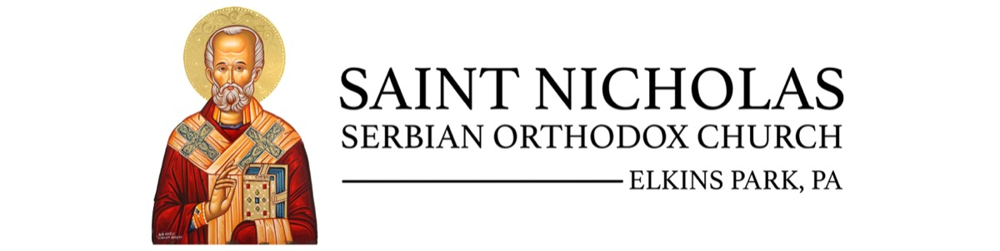

|

|
|
The Messenger
Week of August 14, 2026 · Добро дошли · Welcome
|
|
|
|
✝︎ This Week at the Altar
We worship on the Julian Calendar. All are welcome — come as you are.
| Thursday, Aug 14 |
Dormition Fast begins — two weeks of fasting & prayer |
| Sunday, Aug 16 |
Divine Liturgy — 10:00 AM |
| Monday, Aug 18 |
Eve of the Transfiguration — [BOARD: Vespers time?] |
| Tuesday, Aug 19 |
✝︎ Transfiguration — Divine Liturgy [BOARD: time?] |
|
🔥 The Dormition Fast — August 14–28
Today the Church enters the Dormition Fast — two weeks of fasting and prayer in preparation for
the Dormition of the Most Holy Theotokos (August 28). This fast is one of the most spiritually
rich periods of the Orthodox year, calling us to stillness alongside the Mother of God.
Wed & Fri — strict: no meat, dairy, fish, wine, or oil
Mon, Tue, Thu, Sat, Sun — fish, wine & oil permitted
Transfiguration (Aug 19) — Great Feast: fish, wine & oil freely permitted
|
“Fasting is the mother of prayer, the root of repentance, and the beginning of all good.” — St. Basil the Great
|
|
✨
Transfiguration of Our Lord
Tuesday, August 19 · Преображење Господње
One of the Twelve Great Feasts of the Church. On Mount Tabor, Christ revealed His divine glory to the apostles
Peter, James, and John before His Passion. The blessing of grapes and first fruits is traditionally celebrated at Liturgy.
“Thou wast transfigured on the mount, O Christ our God… that Thou mightest show them the resurrection of all.”
✎ [BOARD: please confirm service time — and whether Fr. Milorad will bless grapes at Liturgy.]
|
|
📚 Church School — New Year Approaching
Our Church School will be welcoming students again soon as the new program year begins in September.
Children learn the Orthodox faith, Scripture, and the traditions of our Church alongside their friends
in a warm parish environment.
[BOARD: first day of Church School? Any enrollment info or teacher news to share?]
Enroll Your Child →
|
🇷🇸 Serbian Language School — Registration Open
Want your children to keep the language of their grandparents?
Serbian carries more than words — it's the language of our Liturgy, our Slava, our songs, and the stories
passed down from baba and deda. Keeping it alive keeps our children connected to who we are.
Classes are taught by native-speaking teachers and follow an age-appropriate curriculum — beginners are welcome.
This is one of the most meaningful things we can do to pass our heritage to the next generation.
|
|
🎉 Teens of St. Nicholas — Let’s Connect
Our parish is home to a wonderful group of young people — and we’d love to see them come together.
We’re looking for one or two teens who want to help organize a youth social event this fall
— a game night, a hike, a coffee hour hangout, whatever sounds fun.
No experience needed. Just a willingness to reach out. Any teen (or parent of a teen) who’s interested —
reply to this email or write stnicholas.soc@gmail.com.
“Let no one despise your youth, but be an example to the believers.” (1 Tim. 4:12)
|
|
📅 On the Horizon
| Aug 28 |
Dormition of the Theotokos — culminating feast of the fast. [BOARD: service time?] |
| Sep 12–13 |
SerbFest — Live Music! Our beloved annual Serbian Food Festival returns. Volunteers & bakers needed — reply to help. |
| Sep 21 |
Nativity of the Theotokos — Liturgy & luncheon |
| Dec 21 |
Church Slava — St. Nicholas the Wonderworker (lunch) |
|
❤️ Caring for Our Own
[BOARD: prayer requests / names for this week?]
“Pray for one another, that you may be healed.” (James 5:16) — To add a name or request a pastoral visit,
reply to this email or write stnicholas.soc@gmail.com.
|
🙏 Support Your Parish
Our services, our school, and the care we show one another are all sustained by this family’s generosity.
If St. Nicholas is your spiritual home, please consider a gift.
|
|
🕮 Need a Priest?
For a baptism, confession, a hospital visit, or simply a difficult time — Fr. Milorad is here for you.
Reach out at fathermilorad@gmail.com and he will be in touch.
|
|
|
|
✉ stnicholas.soc@gmail.com
You’re receiving this because you’re part of the St. Nicholas Serbian Orthodox family in Elkins Park, PA.
506 Stahr Road, Elkins Park, PA 19027
Update preferences · Unsubscribe
|
|